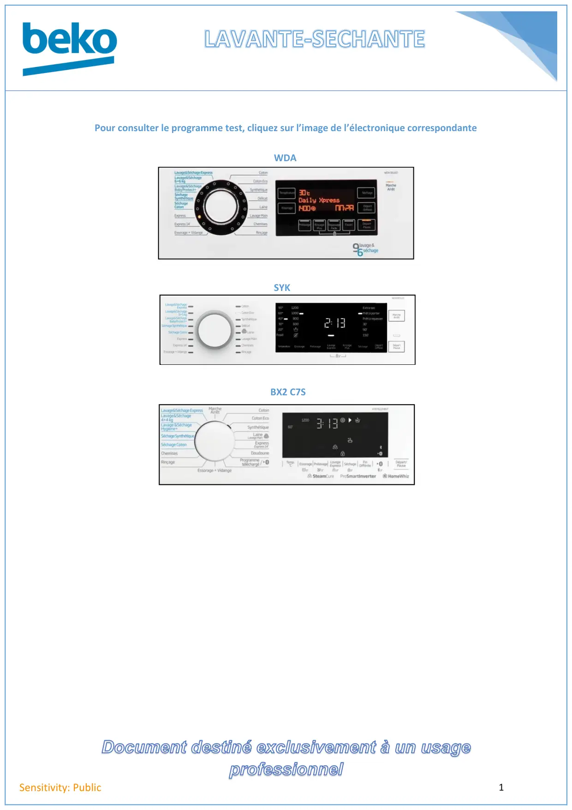

LLS page accueil

Document destiné exclusivement à un usageprofessionnel1Sensitivity: PublicPour consulter le programme test, cliquez sur l’image de l’électronique correspondanteWDASYKBX2 C7S
1 / 1


Gros électroménager
Ressources techniques SAV — Beko · Grundig · Whirlpool · Hotpoint · Indesit.
